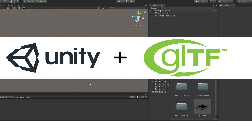

30 APR 2020
Import glTF 2.0 and GLB format Models in Unity
Author: Praddyum Verma

Being a 3D Modeling guy I always get frustrated with the textures. Like why on earth we have to follow a completely tedious and tyring workflow to make good looking Models. I know you must be confused like what I'm talking about? OK, let me tell you the basic workflow of assigning textures to 3D models. Let's assume you have a model with good UV unwrapping then you assign a material to it and then export your model to any texturing software(I prefer Substance painter), after hours of tweaks you create a good looking textured 3d model. Now you export texture from here and come back to your CAD software to assign those texture back to model and then export it. Sounds Easy Enough?
But with the announcement of glTF 2.0 by Khronos group problem is solved and I'm really relaxed now as you just need to assign the textures to your model and export it as glTF. i.e. no need to again go back to Maya and reassign the material.
How to Import?
Step 1: Download latest Release of UniGLTF Click Here!

Step 2: Import it as a package in Unity

Now after importing package a new menu option of UniGlTF will appaer beside component option
Step 3: Click the UniGlTF option in Menu bar and select import and then import your Model

It will ask to create a prefab . Create it.
Congratulation! Now you must be able to see 3D Model in your Project panel

Feel free to reach me for doubts Contact
Thanks for Visiting. Have a nice day.